The present chapter will introduce all the modules in the src directory. The modules are organised in alphabetical order.
mod_calendar.F90
The module mod_calendar contains all the subroutines that initialise and update the calendar of the simulation. This module contains five subroutines: init_calendar, previous_calendar, update_calendar, end_calendar and tt_calendar.
-
The subroutine init_calendar defines the starting date of the calendar as well as the time step of the simulation tseas.
-
update_calendar updated the calendar using the given time step and the initial date. The calendar is computed for both forward and backward simulations in time. Let us consider a simulation forward in time, where the start year (StartYear) is set to 2000 and the current year (currYear) is 2004. The variable iyear describes the number of simulation years. If loopYears is activated, after reaching the year set as loopEndYear (2010 in this case) the calendar is set back to the loopStartYear (2000). iyear is not altered by this correction.

Note than in backward simulations in time, loopStartYear>loopEndYear. The start year ( StartYear) is always larger or equal to the current year ( currYear) - unless loopYears is activated. If loopYears is activated, the calendar is corrected in similar way to the forward simulations (see Figure above).
-
end_calendar computes the final date of simulation defined by the time step intrun, while previous_calendar computes the date previous to the starting date. The latter is required when loopYears is activated.
-
tt_calendar uses the starting date as a reference and translates the time step tt into a date (year, month, day) and time (hour, minute, second).
mod_clock.F90
The module mod_clock calculates the new time step referenced to the initial time step. This module contains one subroutine update_time.
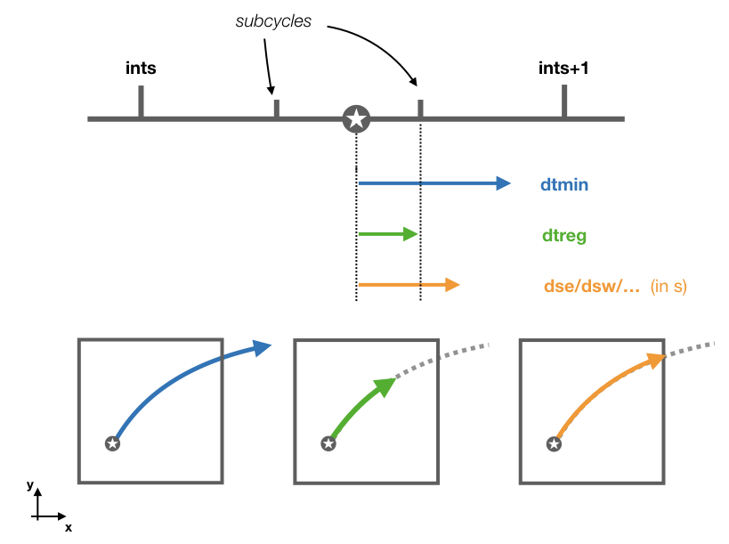
The subroutine updates tt and ts based on the value of ds. This is transform to a time step in seconds dt by multiplying ds with the volume dxyz. The subroutine chooses between the smallest of three different time steps:
1 - dtmin which is the time step between two time subcycles where iter is the number of subcycles.
2 - dtreg which is the time step to the next time subcycle.
3 - And the time step corresponding to the smallest wall crossing time computed with cross_time.
After updating the values of tt and ts, the new values of intrpb and intrpr are computed.
mod_diffusion.F90
The module mod_diffusion adds a random displacement to a trajectory. Diffusion is activated by setting l_diffusion to TRUE. This module contains two subroutines: diffuse and displacement.
By activating diffusion the calculation of stream functions is deactivated unless they are computed offline and write_frec is set to one or two.
-
The subroutine diffuse works as follows: the new position of the trajectory calculated by update_traj is stored in a temporary position value tmpX, tmpY, tmpZ. The subroutine calls displacement to compute a random displacement. This displacement is add to tmpX, tmpY, tmpZ. The subroutine corrects the position if jperio or iperio are different from zero. The subroutine tries to find a suitable new position. If the new position is outside the domain, a new random displacement is calculated. The subroutine computes a maximum of 100k iterations, if no suitable positions are found by then, no displacement is added.
-
The subroutine displacement computes a random displacement coordinates xd, yd, zd from the time step dt, and the values of the horizontal Ah and vertical Av diffusivity. The displacement are computed as follows:
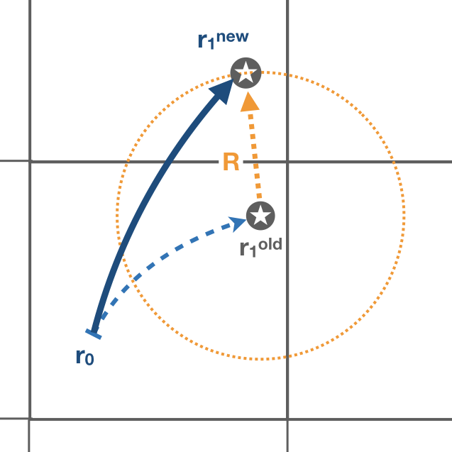
where represent random numbers defined between zero and one.
mod_divergence.F90
The module mod_divergence computes divergence/convergence of all the tracers defined in the namelist. This module will be activated if both l_tracer and l_divergence are TRUE.
-
The subroutine init_divergence initialises and allocates the variable tracerdiv. This variable is a two dimensional variable in space (x-y coordinates), and is computed for all the tracers (numtracers) and number of killing zones.
Variable name Dimensions tracerdiv imt x jmt x 20 x numtracers -
The tracer divergence is computed in the subroutine compute_divergence. Only trajectories that have reached a killing zone are considered to compute the divergences. The divergence field is updated when a trajectory crosses a gridwall. The value of the tracer at the wall times the mass/volum flux of the trajectory is added to the gridbox where the trajectory is entering. The same value is substracted to the gridbox that the trajectory exited.
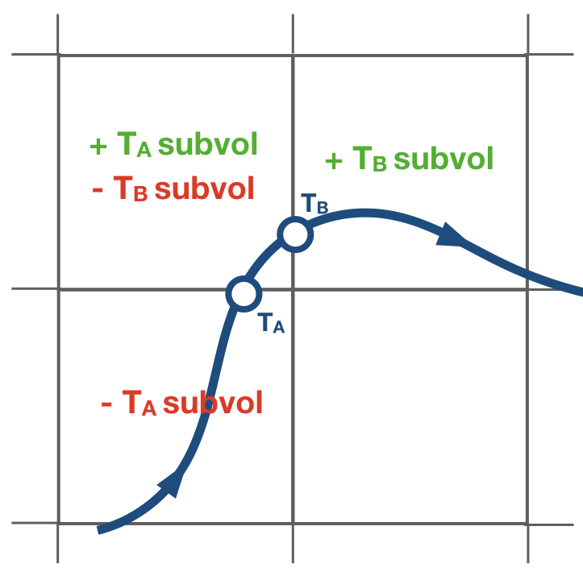
The tracerdiv is divided by the area of the gridbox and multiple the constant described by divconst. A different constant value can be assigned per tracer.
mod_error.F90
The module mod_error check for possible errors in the simulation. If any error is found a diagnostic file with a summary of the error is created. This module contains two subroutines and two private function: errorCheck, write_error, errorType, and reverse.
-
errorCheck check for a possible error defined by teststr. The possible errors are listed below:
teststr errCode Description infLoopError 1 Trajectory trapped in an infinite loop dxyzError 2 The volume of the gridbox is zero or negative boundError 3 Trajectory leaving the domain landError 4 Trajectory hits a land point coordboxError 5/6/7 Trajectory placed in the wrong box dsCrossError 8 No available pathways for the trajectory Note:
A infinite loop is defined when a trajectory is iterated more than 30000 times since last time it crossed a wall or started a time subcycle. -
If an error is found in a trajectory, the last position and time step will be stored in a _err.csv file. The module write_error besides writing the number of the trajectory ntrac, the last position x1, y1, z1, the volume/mass transport subvol and the time step; it also gives a short description of the error.
Note:
The positions are given referenced to the original dataset reference system. -
errorType is a private function that gives a short description of the error given by errorCode. This output is used by write_error.
-
reverse updates the indexes if the original data’s grid does not correspond to the TRACMASS grid set up.
mod_getfile.F90
The module mod_getfile consists on five functions: filledFileName which updates the dateprefix according to the calendar, getScalarNC to extract scalars, get1DfieldNC to extract 1D data fields, get2DfieldNC to extract 2D data fields, and get3DfieldNC to extract 3D data fields.
-
The function filledFileName has four arguments: filedPattern a character string that contains the dateprefix, and inyear, inmon and inday representing the year, month and day of the calendar. The function will find the string YYYYMMDD and replace it with the corresponding year, month or/and day.
-
The function getScalarNC has two arguments: fieldFile the path to the netCDF file, and varName name of the variable to be extracted.
-
The function get1DfieldNC has four arguments: fieldFile the path to the netCDF file, varName name of the variable to be extracted, start1D a 4D array that describes the starting indexes, and count1D a 4D array that describes how many indexes are read.
-
The function get2DfieldNC has five arguments: fieldFile the path to the netCDF file, varName name of the variable to be extracted, start2D a 4D array that describes the starting indexes, and count2D a 4D array that describes how many indexes are read. The last index stcase describes the order in which the data is stored in the netCDF file:
– ‘st’: [x, y, time]
– ‘st_r’: [y, x, time] -
The function get3DfieldNC has five arguments: fieldFile the path to the netCDF file, varName name of the variable to be extracted, start3D a 4D array that describes the starting indexes, count3D a 4D array that describes how many indexes are read, and stcase describes the order data is stored in the netCDF file:
– ‘ts’: [time, x, y, z]
– ‘st’: [x, y, z, time]
– ‘ts_r’: [time, z, y, x]
– ‘st_r’: [z, y, x, time]
If the original data is reduced to a subdomain, both functions will only extract data in the selected subdomain. For the case where the subdomain crosses the zonal limit of the original domain, the function will read separately the two subdomains and then join them into a unique subdomain (blue domain).
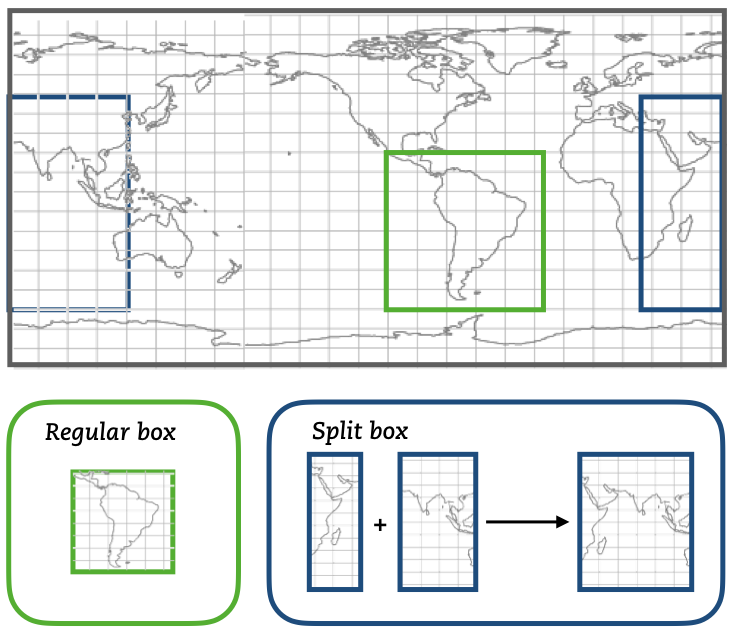
mod_init.F90
The module mod_init consists of two subroutines: init_namelist that reads the namelist, and init_alloc that allocates all the allocatable arrays. More information about the namelist can be found in the Namelist chapter.
It contains an internal subroutine reverse to adapt the meridional indexes to the TRACMASS reference system.
mod_loop.F90
The module mod_loop is the core module of TRACMASS. This module contains the big loop that updates the calendar, the clock and the position of the trajectories.
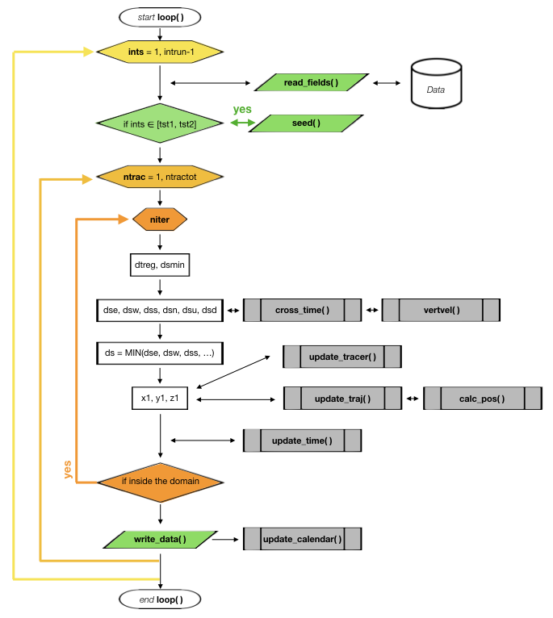
This is how the module works:
1 - First the fields are updated according to the value of ints.
2 - Then, if the time step corresponds to a seeding time, the subrotuine seed is called.
3 - Then the loop checks all the possible trajectories given by ntrac. If the trajectory is not activated the module while skip it.
4 - If a trajectory is activated it will be iterated several times where its position will be updated (update_traj).
5 - If the trajectory exceedes the limit time timax, it will be deactivated.
6 - After each iteration the calendar is updated.
If all the trajectories are deactivated the simulation will be stopped even if the corresponding time step is not the final one set by intrun.
mod_pos_tstep.F90 / mod_pos_tanalytical.F90
Both modules mod_pos_tstep.F90 and mod_pos_tanalytical.F90 calculate the new position of a trajectory and the time it will take to cross a wall in the gridbox. However, each of these modules computes the crossing time using different schemes. Currently two different schemes are available: regular time step scheme (default case) and the time analytical scheme (which can be activated in the project Makefile). Each of these modules contains three public subroutines: cross_time, calc_pos, and update_traj. Only the subroutine update_traj is common in both schemes.
-
The subroutine update_traj updates the position of the trajectory after a time step given by ds and computes the new values for x1, y1, and z1. It also updates the value of boxface which is zero if the trajectory remains inside the box or is assigned with a value between 1-6 if it crosses one of the walls. The subroutines check if any of the crossing values given by cross_time corresponds to the value of ds to determine the new position.
ds ib / jb / kb Crossing wall (boxface) dse ia + 1 / ja / ka Eastern (1) dsw ia - 1 / ja / ka Western (2) dsn ia / ja + 1 / ka Northern (3) dss ia / ja - 1 / ka Southern (4) dsu ia / ja / ka + 1 Upper wall (5) dsd ia / ja / ka - 1 Lower wall (6)
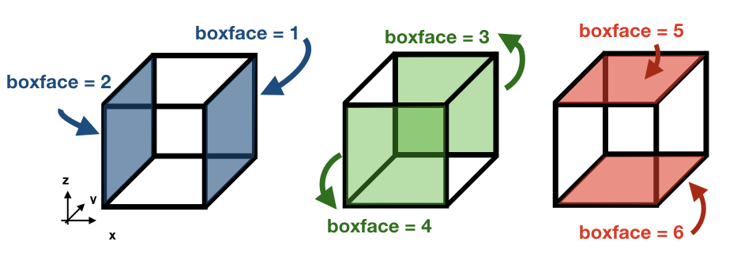
If ds is smaller than any of the crossing times and equal to the time stepping, or if the trajectory is inside a convergence zone where all the crossing times are UNDEF. The trajectory remains inside the box.
By default trajectories can reach the last vertical level km and will be flagged with the exit flag one. However, by activating l_nosurface trajectories are prevented from reaching the surface. Instead, they are placed back in the middle of the last grid box (ka = km).
Note:
If stream functions are computed online (l_offline is false), this subroutine will transfer the required information to compute geographical streamfunctions.
Important:
The north fold (jperio) is an important feature for original grids that are not based on latitude longitude such as the ORCA grids. The current version includes two possible corrections to the north fold: no correction (0), and correction for ORCA grids (1).
Regular time step scheme
- The subroutine cross_time computes the time it will take to cross any of the faces determined by the variable ijk. The possible values of ijk are (1) for the east/west faces, (2) for the north/south faces, and (3) for the up/down faces. For simplicity, let us consider the case of ijk =1 with an eastward zonal flow uflux.
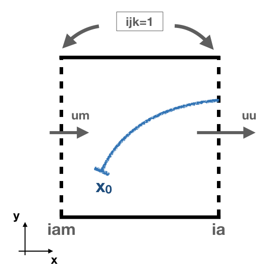
This is how the module works:
- - First, the interpolated values of the zonal flow uflux in the east wall (uu) and in the west wall (um) are computed. A linear interpolation is used to obtained the values for uu and um: $$ U_i(t) = \frac{(t-t_0) \ U_i(t_1) + (t_1-t) \ U_i(t_0)}{t_1-t_0} \quad \text{where} \quad t_0 \le t \le t_1. $$ In this case \( t_0 \) and \( t_1 \) represent the n and n+1 time step.
- - If uu is positive the subroutine computes the crossing time through the eastern wall \(t_E\)(sp).
- - If uu = um , the time it will take to the trajectory to cross the east wall is: $$ t_{E} = \frac{x_E-x}{U_i(t)}. $$
- - If uu \(\neq\) um, the velocity field inside the box is linearly interpolated: $$ U(x) = (x-x_W)(U(x_E)-U(x_W)) + U(x_W) \quad \text{where} \quad x_W \le x \le x_E, $$ where iam represents the index for the western wall (\(x_W\)) and ia represents the eastern wall (\(x_E\)). If \(U(x)>0\) at the starting position of the particle, the time to reach the eastern wall is given by: $$ t_{E} = \frac{1}{U(x_W)-U(x_E)}\log\left(\frac{U(x)}{U_E} \right) $$
- -If none of the above conditions is fulfilled the subroutine returns the value UNDEF for sp.
- - Following a similar procedure, the subroutine computes the crossing time through the western wall (sn).
The equations used to compute the crossing time considers a different spatial interpolation of \(U(x)\) for sn. The crossing time through the western wall is given by the following equation \(t_{W} = \frac{1}{U(x_W)-U(x_E)}\log\left(\frac{U(x)}{U_W} \right)\).
- The subroutine calc_pos computes the new position of the trajectory after time ds in the direction given by ijk. This subroutine works in the following way (let us consider the same case as in the previous example for cross_time):
- - First, the interpolated values of the zonal flow uflux in the east wall (uu) and in the west wall (um) are computed. A linear interpolation is used to obtained the values for uu and um.
- - If uu = um, the new position of the trajectory is given by: $$ x_1 = x_0 + U(x_E)ds $$
- - On the other hand, if uu \(\neq\) um the new position is: $$ x_1 = \left(x_0 - x_W + \frac{U(x_W)}{U(x_E)-U(x_W)} \right) e^{(U(x_E)-U(x_W))ds} + x_W - \frac{U(x_W)}{U(x_E)-U(x_W)}$$.
If the trajectory is placed at \(U(x)=0\) in a divergent field, calc_pos is not able to determine the new position (unstable equilibrium).
Time analytical scheme
- The subroutine cross_time computes the time it will take to cross any of the faces determined by the variable ijk. The possible values of ijk are (1) for the east/west faces, (2) for the north/south faces, and (3) for the up/down faces. For simplicity, let us consider the case of ijk =1.
This is how the module works:
- - First, the volume/mass flux values are computed at the nearest gridwalls (\(x_E\) and \(x_W\)) and at the nearest time steps (\(t_0\) and \(t_1\)):
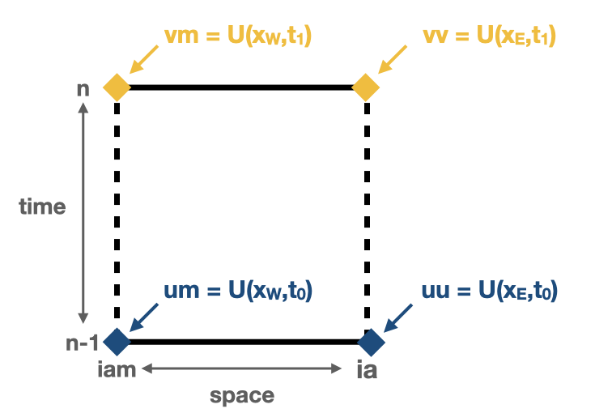
$$ U(x_E,t_0) = \textbf{uu} \quad U(x_W,t_0) = \textbf{um}\\ U(x_E,t_1) = \textbf{vv} \quad U(x_W,t_1) = \textbf{vm} $$ In this case \( t_0 \) and \( t_1 \) represent the n and n+1 time step. - - Then, the coefficient \(\alpha^{*}\) is computed: $$ \alpha^{*} = -(\textbf{vv}-\textbf{vm}-\textbf{uu}+\textbf{um}). $$ Depending on the value of \(\alpha^{*}\) three different subroutines are called to calculate the crossing time: apos (\(\alpha^{*}>0\)), aneg (\(\alpha^{*}<0\)), and azer (\(\alpha^{*}=0\)).
- -The subroutines apos, aneg, and azer compute the crossing time as well as identify the crossing wall. This is done by finding the roots of the equation \( r(s_w) - r_w = 0\) numerically; where \(r \equiv x/\Delta x\) represents the position indexes, \(s_w\) is the volume normalised time, and \(r_w\) is one of the exit walls.
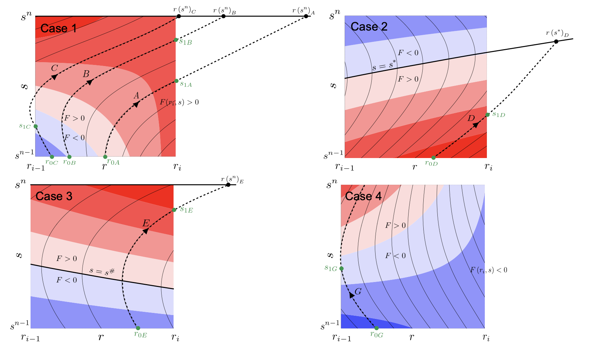
The subroutines try first to calculate the crossing time through the eastern wall (northern wall for ijk=2, and uppwe wall for ijk=3). Four different cases may arise:- - Fluxes at ia are positive between the time steps n and n+1
- - Fluxes at ia change from positive to negative at some time between the time steps n and n+1
- - Fluxes at ia change from negative to positive at some time between the time steps n and n+1
- - Fluxes at ia are negative between the time steps n and n+1
These cases are illustrated in the figure above. Except for the fourth cases, the other three cases may have a crossing time across the eastern wall. If the crossing time exceeds the maximum time given by \( t_1 \), the output will be UNDEF.
If there is no crossing through the eastern wall or if there is a possibility that the time to cross the western wall is smaller, the subroutine reconsiders again the four conditions described before.
The roots to solve the equation are computed using a bisection method that guarantees a convergence towards the root.
Note :
For a more detailed description of the time analytical method check Döös et al. 2017 - - Finally, depending on the crossing wall index the value of dse and dsw are updated.
where \(s_w\) and \(s_0\) are the crossing time and the initial time (volume normalised), respectively.\(r_w\) cross wall index dse/dsn/dsu dsw/dss/dsd ia \(s_w-s_0\) UNDEF iam UNDEF \(s_w-s_0\) -99 UNDEF UNDEF
- The subroutine calc_pos computes the new position of the trajectory after time ds in the direction given by ijk. This subroutine works in the following way (let us consider the same case as in the previous example for cross_time):
- - First, the volume/mass flux values are computed at the nearest gridwalls (\(x_E\) and \(x_W\)) and at the nearest time steps (\(t_0\) and \(t_1\)).
- - Then, the coefficients \(\alpha\)(alfa), \(\beta\)(beta), \( \gamma\)(gamma), \(\delta \)(delta) are computed: $$\begin{eqnarray*} \alpha &=& - \frac{1}{\Delta s}(\textbf{vv}-\textbf{vm}-\textbf{uu}+\textbf{um}),\\ \beta &=& (\textbf{um}-\textbf{uu}) - \alpha\cdot\textbf{sm},\\ \gamma &=& - \frac{1}{\Delta s}(\textbf{vm}-\textbf{um}) - \alpha\cdot\textbf{iam}, \\ \delta &=& -\textbf{um} + \textbf{iam}\cdot(\textbf{uu}-\textbf{um}) - \gamma\cdot\textbf{sm}. \end{eqnarray*} $$ where \(\Delta s\) (dstep)is the volume normalised time step, and sm corresponds to \(s^{n-1}\).
- - Depending on the value \(\alpha\) different trajectories paths are available:
- \(\alpha\) > 0: For this case, we define the time-like variable \(\xi = (\beta + \alpha\cdot s)/\sqrt{2\alpha}\) and \(r_0 = r(s0)\), where \(s_0\) is the initial time. The new position of the trajectory is given by: $$ r(s) = \left(r_0 + \frac{\gamma}{\alpha}\right) e^{\xi_0^2-\xi^2} - \frac{\gamma}{\alpha} + \frac{\beta\gamma - \alpha\delta}{\alpha}\sqrt{\frac{2}{\alpha}}[D(\xi)-e^{\xi_0^2-\xi^2}D(\xi_0)] $$ where \(D(\xi)\) is the Dawson's integral.
- \(\alpha\) < 0: For this case, we define the time-like variable \(\zeta = (\beta + \alpha\cdot s)/\sqrt{-2\alpha}\) and \(r_0 = r(s0)\), where \(s_0\) is the initial time. The new position of the trajectory is given by: $$ r(s) = \left(r_0 + \frac{\gamma}{\alpha}\right) e^{\zeta^2-\zeta_0^2} - \frac{\gamma}{\alpha} - \frac{\beta\gamma - \alpha\delta}{\alpha}\sqrt{\frac{\pi}{-2\alpha}}e^{\zeta^2}[\textrm{erf}(\zeta)-\textrm{erf}(\zeta_0)] $$ where \(\textrm{erf}(\zeta)\) is the error function.
- \(\alpha\) = 0, which would normally not occur in realistic GCM: $$ r(s) = \left(r_0 + \frac{\delta}{\beta}\right) e^{-\beta(s-s_0)} - \frac{\delta}{\beta} + \frac{\gamma}{\beta^2}[1 - \beta s + (\beta s_0 -1)e^{-\beta(s-s_0)}] $$
The Dawson's integral are computed following the subroutine describe here (function daw in the module). The error function and the complementary error function are computed following this subroutines (functions fun_erf and fun_erfc in the module) instead of using the intrisic ERF and ERFC functions.
mod_postprocess.F90
The module mod_postprocess reads the output files, computes offline streamfunctions, tracer divergence map, and a more detailed summary of the TRACMASS run.
-
The subroutine postprocessing reads the output files and stores the require information to compute a summary or offline streamfunctions/divergence calculation. The following information is read: the initial number of trajectories and total transport (from _ini.csv), the number of trajectories that left the domain or exceeded the time limit and the total tranport (from _out.csv), and the position indexes and the tracer values (from _run.csv if offline streamfunctions or divergences are computed).
-
init_alloc_postprocessing allocates and initialises the required arrays to compute offline streamfunctions and/or to compute tracer divergence.
-
print_summary prints a short summary of the total number of trajectories that are initialised and the ones that left the domain (organised by the different killing zones). It also prints a summary of the transports. This subroutine is only called if the main program is run with the summary argument on (see chapters Configuration and Main program).
mod_print.F90
The module mod_print is responsible for printing the basic information about the run which includes a short summary of the model configuration, the number of trajectories run and a final summary of the number trajectories that are still running, have been deactivated or have errors.
mod_seed.F90
The module mod_seed defines all the variables and arrays neccesary for the seeding of particles. This modules contains two public subroutines (init_seed and seed) and three private subroutines (split_grid , read_mask, and reverse)
The subroutine init_seed defines the grid points and the time steps where the particles are going to be initialised, the wall of the grid where they are going to be placed (isec), and their direction (idir). There are three options for isec: (1) on the east wall of the grid cell, (2) on the north wall of the grid cell, and (3) on the top wall of the grid cell. idir selects the initial direction of the trajectories eastward/northward/upward (idir = 1) or westward/southward/downward (idir = -1).
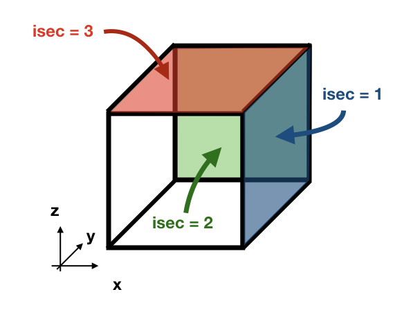
If the simulation is backward in time (nff = -1), idir represents the last direction of the trajectory to follow. For example, let us consider a eastward flow field. A simulation with nff = -1 and idir = 1 will follow trajectories back in time that initially are moving eastward.
The initial seeding location, time, and direction can be defined directly in the namelist or read from a file. This is control by seedType and seedTime.
- seedType: (1) the seeding location is defined by the grid points within the volume described by (ist2-ist1+1)x(jst2-jst1+1)x(kst2-kst1+1), all these trajectories will shared the idir and isec defined in the namelist, (2) the seeding location and the direction is read from an external file seedDir/seedfile.
The mask file only will be read if seedType is set to one. The mask array is two dimensional and has the dimensions imt x jmt. If a mask file is provided (maskFile), only the values where mask=1 (marked in orange in the figure) will be selected for seeding.
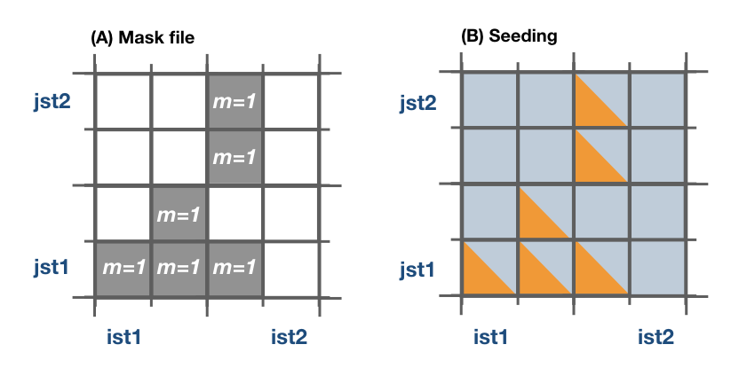
The reading of the mask file is done by the internal subroutine read_mask. The indexes in the mask file are in the original file reference system.
- seedTime: (1) the seeding happens in the time interval defined between tst2 and tst1, or (2) it is read from a external file seedDir/timeFile.
The seed subroutine populates the trajectory array that contains the position of the trajectories as well as their corresponding volume/mass transport. This module works this way:
1 - The subroutine checks if the current time ntime corresponds to a seeding time.
2 - The corresponding flux is chosen according to the value of isec. If the direction does not correspond to the value of idir the trajectory is not activated.
3 - num, the number of trajectories per grid point, is defined. There are different options based on nqua: (1) the number of trajectories is defined by partQuant, or (2) the particles transport a specific volume/mass transport defined by partQuant, the number of particles in the grid is then defined dividing the total volume/mass transport by partQuant.
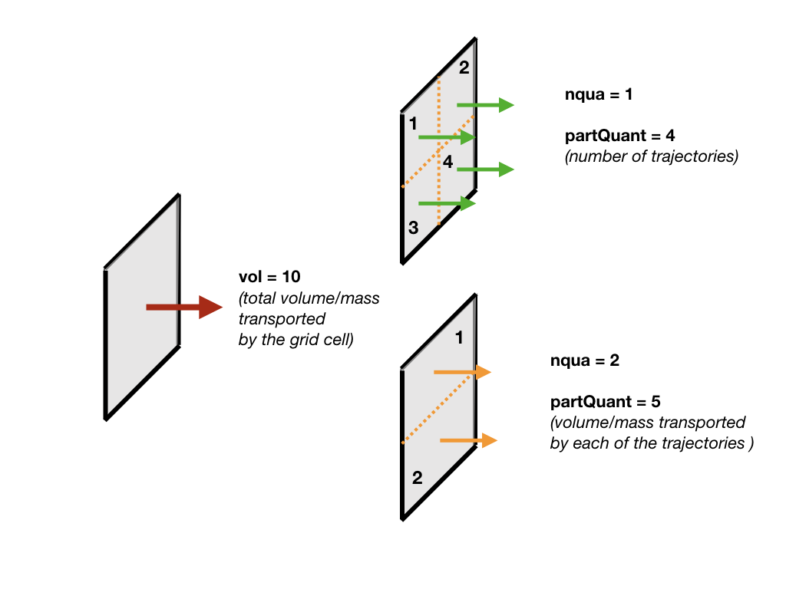
4 - The grid is split in equal parts using the private subroutine split_grid. If num is a square number the grid cell is divided in equal squares, if num is a prime number the grid is split in equal rectangles along one axis (see figure below). For other cases, split_grid will divide the square in equal rectangles with similar side lengths.
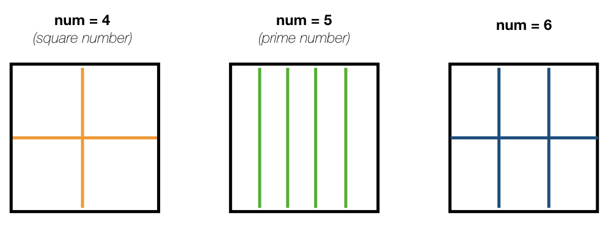
5 - The specific volume/mass transport of a trajectory subvol is computed from num.
6 - The trajectories are placed in the middle of each of the rectangles. This initial position is given by x1, y1, z1.
x1, y1, z1 are computed using the gridbox as a reference.
7 - If TRACMASS is rerun or run to compute streamfunctions, only the trajectories that exit through a kill zone will be activated. Besides, if l_tracers is true, the trajectories outside the tracer limits tracer0min and tracer0max will be deactivated.
8 - The position of the trajectory in the gridbox reference system, the trajectory number ntrac, the corresponding position index and the mass/volume transported by it is stored in the array trajectories.
The private subroutine reverse adjust the seeding indexes to the TRACMASS reference system.
mod_stream.F90
The module mod_stream.F90 is responsible for computing volume/mass fluxes and compute different stream functions. This module contains four subroutines compute_stream, init_stream, update_fluxes (online computation of streamfunctions) and compute_stream (offline computation of streamfunctions).
-
The subroutine init_stream initialises and allocates all the fluxes (fluxes_) and streamfunction (psi_) arrays.
Flux type l_offline = TRUE l_offline = FALSE Barotropic (x-y) (imt, jmt, 21) (imt, jmt, ntractot) Zonal (x-z) (imt, km, 21) (imt, km, ntractot) Meridional (y-z) (jmt, km, 21) (jmt, km, ntractot) Longitude-tracer (x-r) (imt, mr, 21, numtracers) (imt, mr, ntractot, numtracers) Latitude-tracer (y-r) (jmt, mr, 21, numtracers) (jmt, mr, ntractot, numtracers) Tracer-tracer (r-r) ( mr, mr, 21, numtracers) ( mr, mr, ntractot, numtracers)
The last three cases are only computed if l_tracer is TRUE, where mr is the tracer space resolution (501 by default) and numtracers is the number of tracers.
- * If streamfunctions are computed online (l_offline is false), the subrotuine update_fluxes is responsible to update the fluxes and filter them according to the trajectory number. This subroutine has six arguments: index1, index2 represent the indexes of the two coordinates of the streamfunction, dir is the direction of the trajectory (in the stream function coordinate reference system), psicase indicates the type of streamfunction that is computed ('xy': barotropic, 'xz': zonal stream function, 'yz': meridional stream function, 'xr': longitude-tracer stream function, 'yr': latitude-tracer stream function, and 'rr': tracer-tracer stream function). The fifth argument is optional (indt1) and it is used whenever a 'yr' streamfunction is used to represent the different tracer choice. $$ F(\textbf{index1,index2}[, \textbf{indt1}]) = F(\textbf{index1,index2}[, \textbf{indt1}]) + dir \cdot \textbf{subvol} $$ If psicase is 'rr', index1, index2 are linked to the present and past time step of the first tracer, and indt1, indt2 are the present and past time step of the second tracer. The computation of the fluxes in this case is more generalised: $$ F(\textbf{indm1,indm2}) = \textbf{subvol} $$ where \( \textbf{indm1}=[index1,index2) \) and \( \textbf{indm2}=indt1 + slope \cdot(\textbf{indm1}-index1) \). The slope is given by \( (indt2-indt1)/(index2-index1) \).
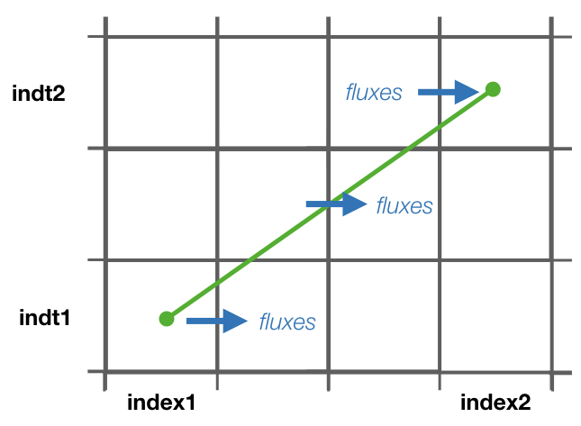
-
If streamfunctions are computed offline (l_offline is true), the subrotuine compute_fluxes is responsible to update the fluxes and filter them according to the killing zones. If write_frec is 3 (stored everytime it crosses a wall) or 4 (save everytime), the fluxes are computed when the stored index corresponds to a zonal wall (barotropic) or to a meridional wall (meridional or latitude-tracer). The tracer-tracer fluxes are computed as in the online case. For other write_frec all the fluxes are computed using the method to compute the tracer-tracer fluxes (see the online case).
-
The subroutine compute_stream integrates the fluxes computed by update_fluxes or compute_fluxes to compute the stream functions. In the case of online calculation of stream function, the subroutine filters only the ntracs that exited through the killing zones. The integration direction is defined by dirpsi.
This is an example of how a stream function is computed. Consider two trajectories (A) with the same volume/mass transport. The computed fluxes are shown in (B) where blue represents positive fluxes and orange negative fluxes. Notice that the region where both trajectories cross the same wall the resulting flux is zero as they cancel each other. The resulting stream function (C) is computed integrating in a downward direction.
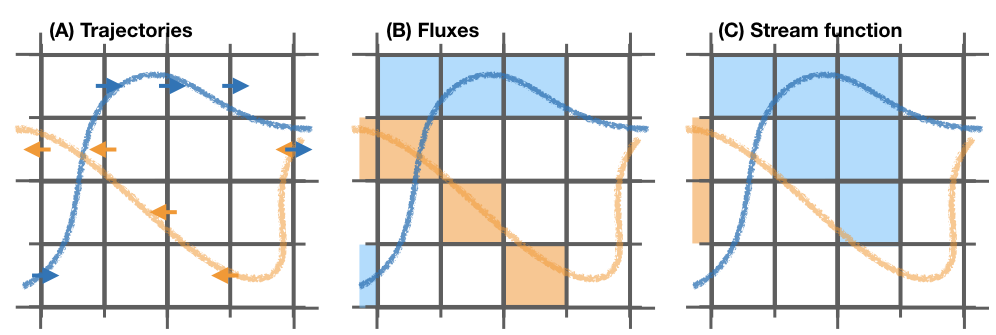
mod_subdomain.F90
The module mod_subdomain.F90 is responsible for defining a subdomain and updating the indexes according to the new domain. Defining a subdomain is useful to run TRACMASS with high resolution data especially if the area of study does not cover the whole original domain. Two types of subdomain can be declared: a regular box (imindom < imaxdom) and a split box (imaxdom < imindom).
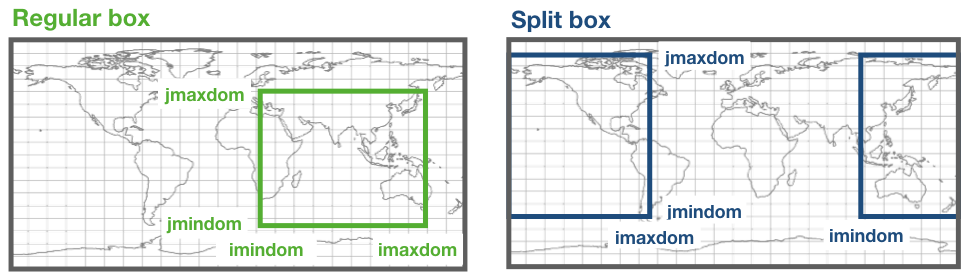
The subdomain is only defined in the longitude-latitude space.
It consists of two subroutines init_subdomain and update_subindex:
-
The subroutine init_subdomain defines the size of the new subdomain. If a subdomain is chosen (l_subdomain is true) the new size of the domain is defined as:
Subdomain type zonal dimension (imt) meridional dimension (jmt) Regular box imaxdom - imindom + 1 jmaxdom - jmindom + 1 Split box imtdom + imaxdom - imindom + 1 jmaxdom - jmindom + 1 Besides, once the subdomain is declared a kill zone is imposed around the boundaries of the subdomain. To avoid problems with the possible kill zones defined by the user in kill_zones.F90 the subdomain kill zones are declared for the indexes 7,8,9 and 10.
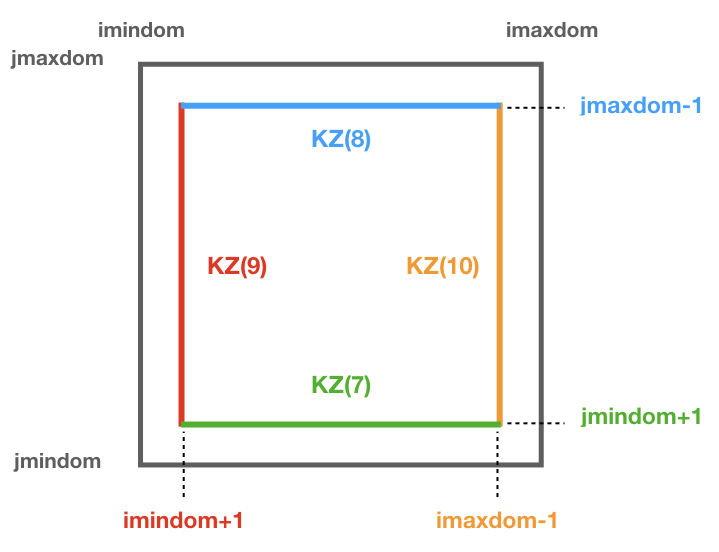
- The subroutine update_subindex updates the subindexes before trajectories are seeded. The indexes are updated using imindom and jmindom as referenced. There is an special case for the Split box case.
| Subdomain type |
zonal index (ji) |
meridional index (jj) |
| Regular box |
ji - imindom + 1 |
jj - jmindom + 1 |
| Split box |
ji - imindom + 1 (if imindom <= ji ) |
jj - jmindom + 1 |
| ji - imtdom - imindom + 1 (otherwise) |
mod_swap.F90
The module mod_swap.F90 is responsible for updating the time indexes for those variables that are time dependent (for more information check the description of read_field.F90) and reversing the fluxes if the trajectories are run backward in time.
mod_tracers.F90
If TRACMASS is run with tracers (l_tracers is true), the module mod_tracers.F90 contains all the subroutines needed to initialise, allocate, compute and update tracers.
- init_tracer initialise the tracers array from the information provided in the namelist. This information consists of a short description of the tracer (name), units, whether the tracer is read from an input file ( action ==’read’) or computed in TRACMASS ( action =’compute’). If the tracer is read, the name of the variable in the input file is given by varname and the number of dimension-s.
To compute stream functions it is important to define the lower (minimum) and the upper (maximum) limit of the tracer coordinate.
- If action is compute, the subroutine compute_tracer will calculate the tracer from other tracers read from input files.
| tracername | Description | External function | Argument 1 | Argument 2 |
| sigma0 | sigma-0 density | thermo_dens0 | Temperature | Salinity |
- update_tracers updates the value of the tracer in the new position (computed by update_traj). The tracers are updated using the nearest point approach where trajectory stores the value of the tracer in the nearest T point. If the trajectory crosses a grid wall the tracer value is the mean value between the two nearest T points. A time interpolation is computed before the spatial interpolation.
-
The private subroutine tracers_default assigns default values to the tracers array for the most common tracers. The tracers included in this subroutine are:
name unit minimum maximum action varname Descripition To degC -3 33 read T Temperature (Ocean) Ta K 173 223 read T Temperature (Atmosphere) Tp K 173 223 read Tp Potential temperature S g kg-1 32 38 read S Salinity q g kg-1 0 25 read q Specific humidity sigma0 kg m-3 19 29 compute Sea water density (sigma0) sigma0_K kg m-3 19 29 compute ——–//—— (T in K) p hPa 0 1100 compute Atmospheric pressure -
The function tracerbin translates the tracervalue to an index in the tracer space,
mod_vars.F90
mod_vars.F90 is a collection of different modules that define the required variables for the different components of TRACMASS. This file contains 10 modules:
-
mod_precdef: defines the precisions of the REAL variables.
-
mod_log: defines the verbose variables.
-
mod_param: the general parameters of TRACMASS are defined here.
-
mod_seedvars: the variables used in mod_seed are defined here.
-
mod_trajdef: the derived TYPE trajectory is defined in this module.
-
mod_loopvars: the variables used in mod_loop are defined here.
-
mod_traj: the variables to describe a trajectory are defined here.
-
mod_grid: the grid variables, and the boundary conditions are defined here.
-
mod_time: defines the variables used by mod_calendar and mod_clock.
-
mod_domain: defines the variables to describe the limits of the domain where the trajectory is activated.
-
mod_vel: the volume/mass fluxes both horizontal and vertical are defined here.
-
mod_trajdef: the derived TYPE tracers is defined in this module.
-
mod_tracervars: the variables to describe tracers are defined here.
-
mod_psi: defines the variables to describe the stream functions.
-
mod_postprocessvars: the variables part of the postprocessing are defined here.
-
mod_activevars: the variables part of the lagrangian diffusion scheme are defined here.
-
mod_divvars: the variables part of the tracer divergence calculation are defined here.
mod_vertvel.F90
The module mod_vertvel computes the vertical volume/mass fluxes. If TRACMASS is setup for two dimensional fields, or the vertical velocity is part of the dataset this module is not activated.
This module contains a single subroutine vertvel that computes the vertical flux using the following equation:
This equation is integrated from the bottom (ocean) or the TOA (atmosphere) to the level ka.
mod_write.F90
The module mod_write creates the outfiles where the information of the trajectories is stored. This module is responsible for writing four important files: _ini.csv where the initial positions are stored, _out.csv where the final positions are stored, _run.csv where the new positions of the trajectory are stored, and _rerun.csv where the trajectory number and the flag corresponding to the kill zone is stored. The output data is stored in the directory given by outDataDir and the output files start with the prefix given by outDataFile. If those values are not specified, the current working directory becomes the default output directory.
If a particle is not terminated it will not be stored in the _rerun.csv file.
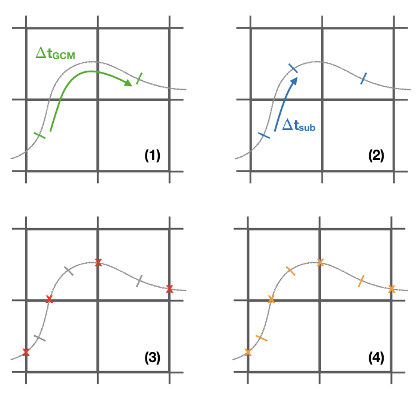
The initial and the final information of the trajectories are always stored. However, the frequency at which data is stored in the _run.csv is controlled by write_frec: (1) only at GCM time steps, (2) only at GCM and subcycle time steps, (3) only when a trajectory crosses a wall, (4) all time steps, and (5) no data stored. The time format of the output files can also be adjusted with timeformat: (0) tt is stored, (1) ts is stored, (2) the time is saved in YYYY-MM-DD HH format.
The format in which the output is written is controlled by write_form. The default value is zero which writes the output with two decimals. By setting write_form to one the output is written with five decimals.
Important:
If TRACMASS is run with the stream function flag this module also writes the resulting stream functions in the files: _psixy.csv for the barotropic case, _psiyz.csv for the meridional case, _psiyr.csv for the latitude-tracer case, and _psirr.csv for the tracer-tracer stream functions. Besides, the subroutine read_rerun will be used to read the trajectories that will be run and the flag corresponding to the kill zones.
Important:
If TRACMASS is run with tracer divergence computation, this module also writes the results in the file: _div.csv.